Assignment: Normalizing Wavefunctions with Jupyter and Colab#
🎯 Objective¶#
To practice Jupyter and Colab.
📜 Instructions#
Presuming you already have a GitHub account, connect to GitHub Classroom. You’ll see 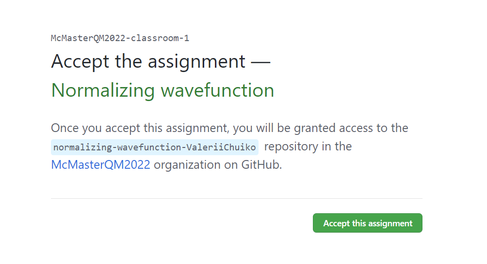
Click
Accept the assignmentand then update the page 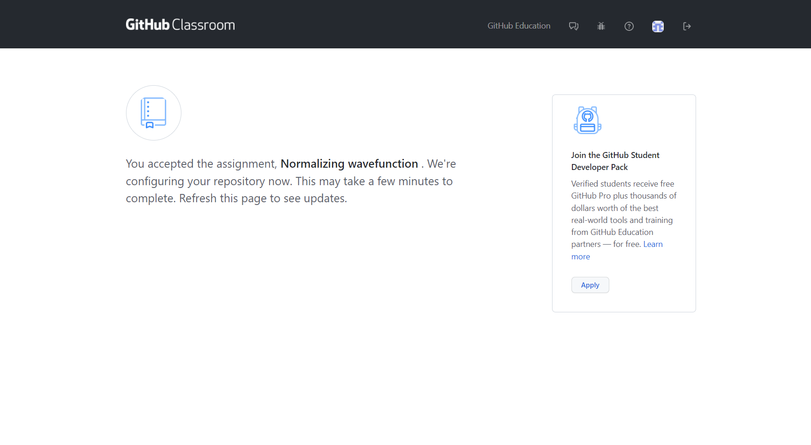. You will see a new repository with the task 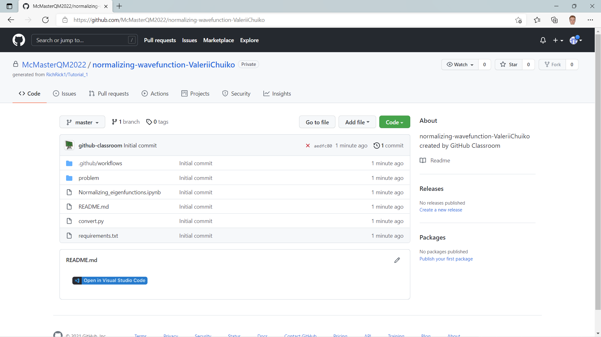To complete the assignment you need to complete the Jupyter notebook
Normalizing_eigenfunctions.ipynb.
Editing a Jupyter Notebook from GitHub#
As described in the notes, there are several ways to edit .ipynb files.
Using Google Colab (direct download and upload)#
In this tutorial we will show how to work with Jupyter notebooks through Google Colab.
Download the
.ziparchive of the GitHub repo. In order to download it clickcodeandDownload Zip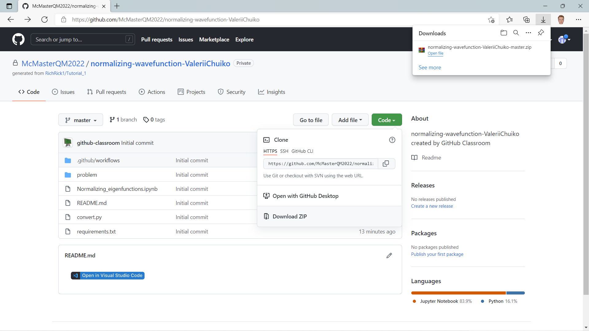When the repo is downloaded, go to Google Colab and add the
.ipynbfile from the repo:File\(\rightarrow\)Upload notebook You will see this window 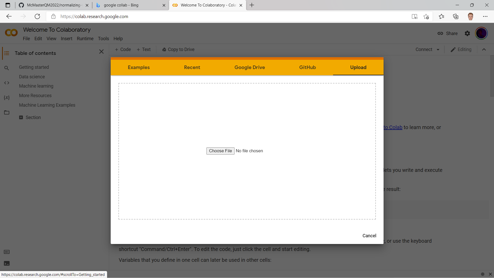
You will see this window 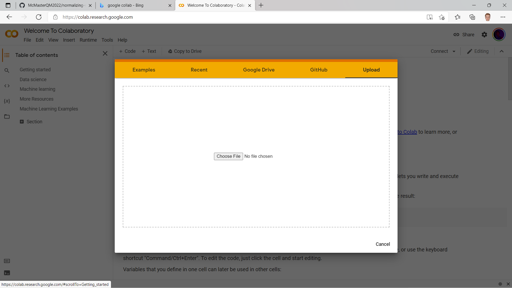Upload the
.ipynbfile
Voila! 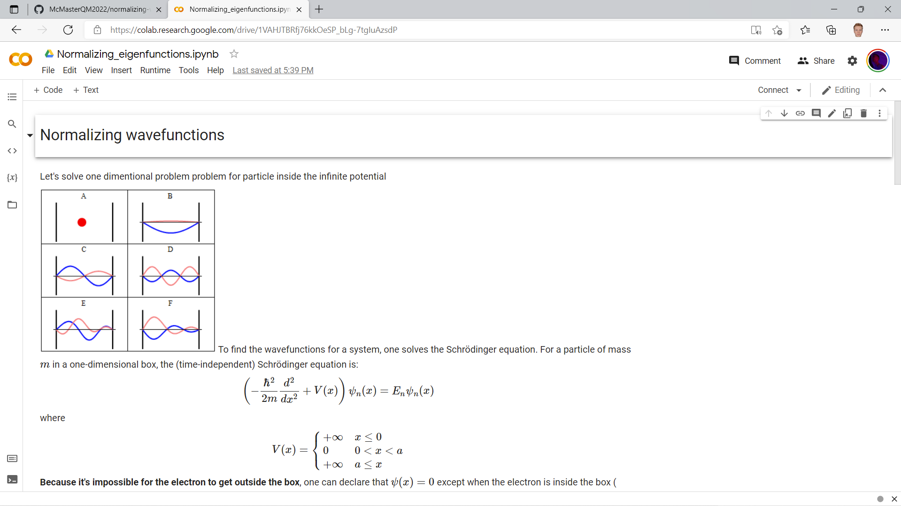
Extension for Chromium Browsers.#
If you use a browser like Google Chrome or Microsoft Edge, then you can use the Open in Colab browser extension. Then,
View the target Jupyter Notebook on Github
Click the extension to open the notebook in Colab.
When you do this, you may need to grant Google/Microsoft (Colab/GitHub) permission to interchange information.
Understanding the assignment#
There is an instruction written in the notebook. All you need to do is to fill the code between
### START YOUR CODE HERE
...
### END YOUR CODE HERE
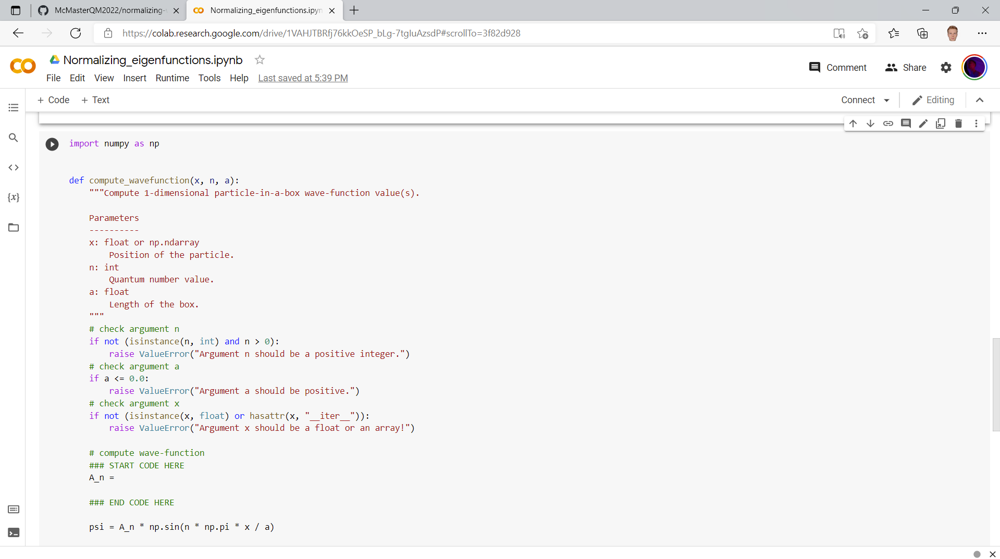
The purpose of this assignment is to compute the normalization constant for the particle-in-a-box. The particle-in-a-box is perhaps the simplest (bound) quantum system. You do not need to know much about the particle-in-a-box to complete this assignment however: referring to the relevant section of the notes, one sees that one can choose \(A_n = \sqrt{\frac{2}{a}}\).
Once the code is completed, you can click the play button to evaluate the cell.
When you are satisfied with a code just click File \(\rightarrow\) Save and then Download \(\rightarrow\) Download .ipynb
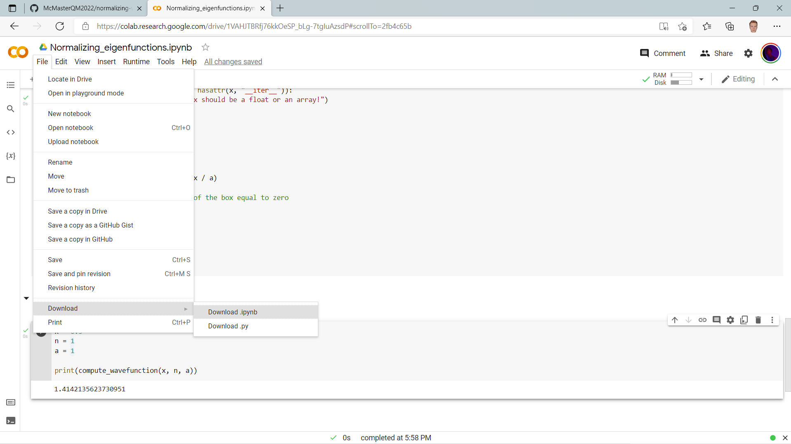
Submitting an assignment#
Submitting the assignment is breeze!
When you downloaded the final version of the file just go to your repo and click Add file \(\rightarrow\) Upload files; then upload your newly created file 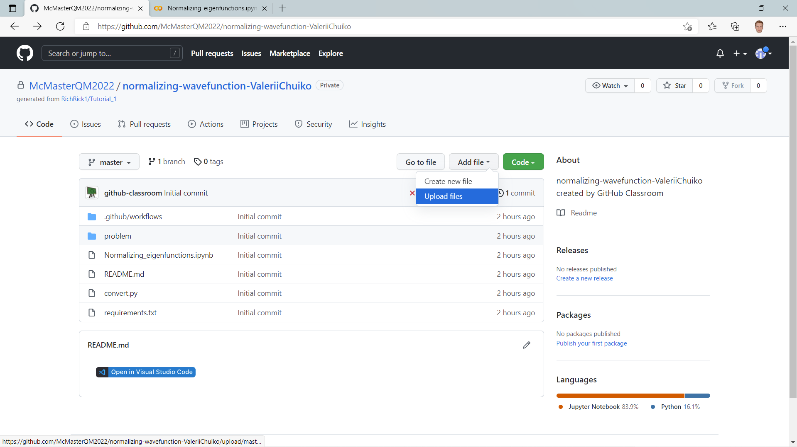
Now commit your changes and click Commit changes 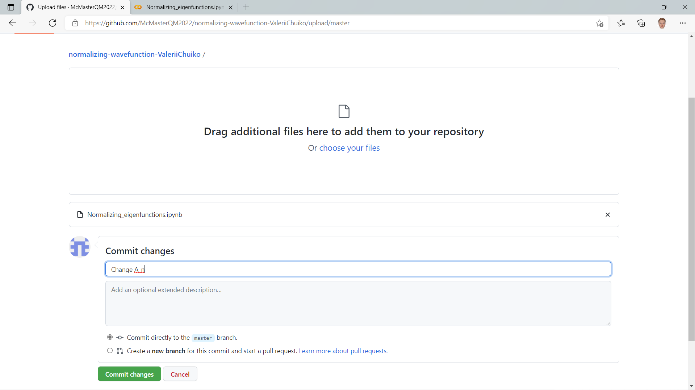
Check the result#
In order to check whether your code passed tests all you need to do is go to Actions\(\rightarrow\) Your commit \(\rightarrow\) Test with pytest. 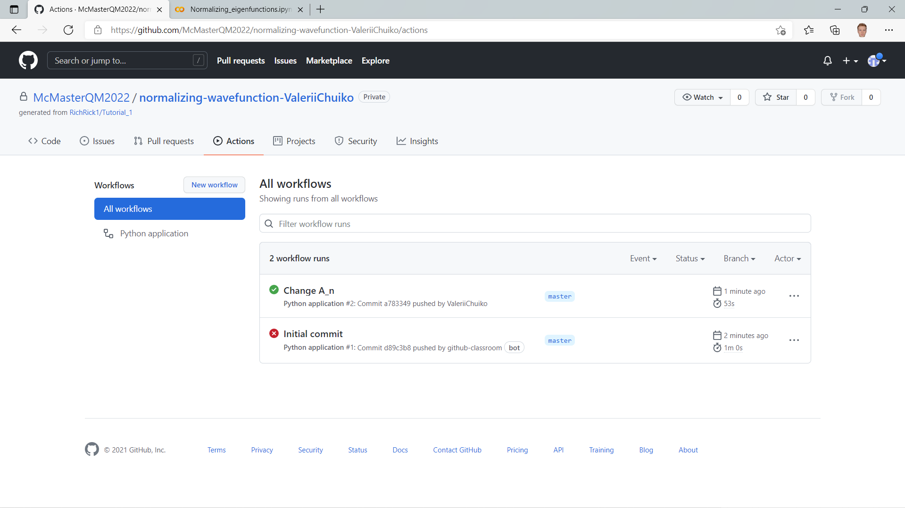 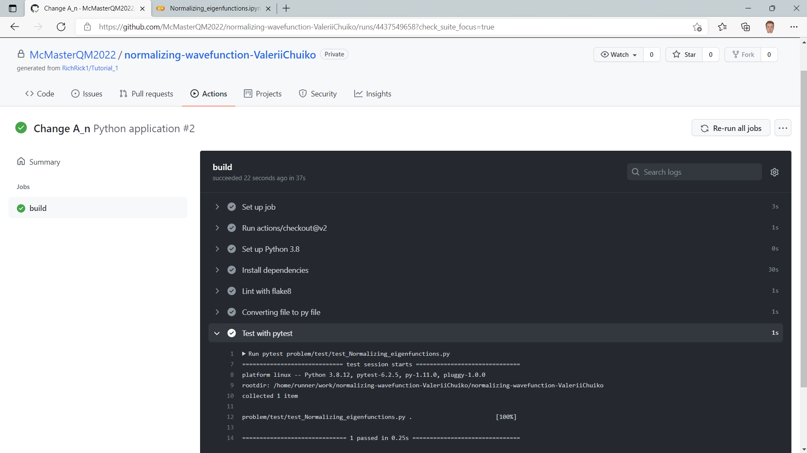 In most cases the tests will run automatically, and you do not need to explicitly invoke Pytest.
If you see a green check mark: CONGRATULATIONS! you passed the assignment
If there is a bug, then the following may occur:


Try to find your mistake but if you get stuck, contact me @RichRick1


Grading Scheme#
Completing the assignment earns you an S. To earn an S+, explore whether there are other choices for the normalization constant that also pass the tests. Can you find a (correct) choice for the normalization constant that nonetheless fails the tests? How is this possible!